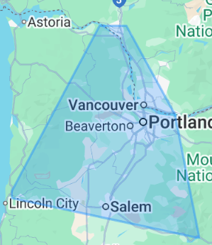

Payment Processing, online courtesy of Paypal/Venmo. In-person, I use Clover.:

This site is designed for you to zoom to whatever level you need to read your screen. If on a mobile, it works better in landscape mode. We recommend learning the keyboard shortcuts [ctrl]+ and [ctrl]-. If you have a full keyboard with 10 key, it's best to use the + and - on his 10 key.
Resume: Ted Seeber Resume In PDF
Resume: Azure Hosted Version of the PowerBI Resume
Phone: 503-318-1508
Email: ted@informationr.us
Ted Seeber, the CEO of Information R-Us is an IT Consultant, a Project Manager and Fractional CTO offering services such as online technical support, small business tax services, onsite computer installations. Ted also offers software engineering, computer repair and virus removal to small business owners on a W2 basis. Rates are negotiable between $60-$150/hr, depending on skills needed, or full time at $145,000/year
| Project Management | Information R-US offers Full Software Development Lifecycle Engineering including an all-inclusive framework that guides the entire process of creating high-quality software from its preliminary concept to its deployment and long-term maintenance. Ted, the CEO of Information R-Us will work with you to gather requirements, subcontract coders, create design documents, execute validation and testing, and finally put together an implementation plan. He will work to gain resources necessary for onsite or web hosting, set up source code control: a bug tracking ticketing system, and work with you to utilize Continuous Implementation/Continuous Development Scripts. Ted can completely manage your project and set up an Agile team. |
| Full Stack Software Engineering | From the initial requirements gathering until your product is perfect, Ted does software engineering including modern Zencoder coding in a variety of languages. He can even take over projects left unfinished by other consultants. |
| Data Analysis/Data Scientist | Got a mess of data that you don't know what to do with? Are all of your direct reports taking CSV extracts into Excel and giving you conflicting analysis? This is the specialty of Information-R-Us, let Ted help you get to a single source of truth! |
| Data Engineering | Power BI is no longer just “one of the tools” — it’s become the core of business analytics. Power BI has many benefits that can be used to accelerate business decision-making to improve efficiency and accuracy. It eliminates labor-intensive processes from multiple sources such as spreadsheets and cloud services, delivers instantaneous insights with up-to-date, live dashboards and reports, and enables faster and more profound analytics with interactive visual aids to interpret complex data. It also self-governates analytics to provide non-technical staff with drag-and-drop dashboards and AI-powered insights, in addition to utilizing artificial intelligence (AI) to deliver predictive insights and detect glitches. Every industry, from finance to healthcare, relies on real-time dashboards and reports to make billion-dollar decisions. The surprising truth? Companies that use BI tools like Power BI are 5x faster at decision-making. Ted provides advanced business consulting on Power BI and other tools. Do you need cloud services? Or perhaps you realize "cloud" just means "other people's computers" and you don't trust the cloud with your data? Is your small business growing and you need more than just what a couple of computers can provide? Are you hiring quickly and need a standardized laptop build? Ted can set up, manage, and maintain your dedicated physical or virtual server and all of your employee workstations with vital IT services such as file sharing, data backups, secure remote access, and application hosting. He utilizes a wide range of hardware such as tower servers or rack servers, and software like Windows Server Essentials. Ted can design, advise, and set up your small business backroom servers for you and his cost is negotiable. |
| GenAI Automation | Are you ready for the next step in automation of your business processes? Let Information-R-Us Gather Requirements, set you up with cloud based or onsite AI services, and let the AI do your tasks for you. |
| Close this business | Need any of the above services 40 hours a week for at least a year? For a mere $165,000 salary with benefits, you can hire Ted and cause this business to close for as long as you like. Minimum 1 year contract. |
Information R-Us offers a wide variety of essential in-home IT services both online and in-person. Ted Seeber is a seasoned IT Consultant with over 30 years of experience. He can assist you with all aspects of IT related services within your home, including online technical support, computer repair, and home printer and software installations.

| In Home Retainer | Unlimited Tech Support Calls and Windows Quick Assist Connections for minor issues. | $15/month |
| Online Tech Support | This service offers basic technical support for help desk type computer problems such as password resets, software installations, and network connectivity problems. All computers must be able to boot into Windows for assistance. Ted can troubleshoot issues, provide guidance on product usage, perform any needed repairs, and ensure the optimal functionality of all of your technology. | $150/hr |
| Taxes | Information R-Us has been providing tax services for individuals and small businesses using TurboTax. Ted finds that using TurboTax makes doing taxes relatively easy. He has been doing his own taxes and the taxes of friends since 1998. Additional filing fees may be involved depending the complexity of your taxes. The flat rate listed below is for his time. He can also teach you how to do your own taxes with TurboTax, so next year you won’t need to call him. | $160/person |
| Windows Upgrade | Are you feeling apprehensive about upgrading to Windows 11? Here are some of the benefits: Improved performance, consistent UI, security, better multitasking, widgets pane, advanced security features, built-in generative ai, centralized taskbar, improved included apps, improved multiple desktops and monitor docking, Microsoft Teams integration, ongoing support, and better performance than Windows 10. Let Ted manage it! He will make sure all your files are backed up properly, and help you find a way forward. | $180/hr |
| Home printer install | Do you have an old printer or a new printer that you can’t get installed or hooked up to your computer, so you can print? If you have an old printer, it might have compatibility issues with your new computer. If you have a new printer, it might be a driver or software conflict. Either way, Ted is your guy! He offers this as an in-home service. | $140/hr |
| Virus Detection and elimination | We run a full system scan with reputable antivirus software to detect and quarantine/delete the threats. So don't throw away that old windows computer when it slows down and starts acting strange. Ted can find what is running, eliminate excess spyware and viruses, and get your computer running like new again! This is an in-home service due to the need for multiple reboots and an onsite assessment. | $600 flat rate |
| Onsite install | Do you have a new computer you are not sure how to set up? Ted will come to your home to assemble and configure your new computer and its accessories. Ted will ensure everything works correctly. He will transfer your important files and help you learn how to use your new computer. He will also get it on your Wi-Fi as quickly as possible. Ted charges a $100 minimum for in house service and most installs take less than an hour. | $100/hr |
Ted Seeber, owner and CEO of Information R-Us is a seasoned Enterprise Data Architect, IT Consultant, Project Manager, Fractional CTO and The SQL Unicorn you’ve been looking for! He has a strong background in ETL processes, schema design, and predictive analytics. He enjoys opportunities that allow him to drive strategic data initiatives and help organizations harness the full value of their information assets. He offers business analytics, software engineering, and executive advisory consultancy to mid-size businesses both online and in-person.
| Retainer Fee | "Running a small business. We get it! Sometimes you need an IT expert or a data whiz, but hiring someone full-time just isn't in the cards. Retainer fee is fully refundable on your first invoice for our time. It's basically a deposit that comes right back to you! Important note: To make sure we can dedicate the right resources and give you the best possible service, we do require the retainer to discuss your specific needs and how we can help." | $300/month |
| Small Business Workstation/Server | Do you need cloud services? Or perhaps you realize "cloud" just means "other people's computers" and you don't trust the cloud with your data? Is your small business growing and you need more than just what a couple of computers can provide? Are you hiring quickly and need a standardized laptop build? Ted can set up, manage, and maintain your dedicated physical or virtual server and all of your employee workstations with vital IT services such as file sharing, data backups, secure remote access, and application hosting. He utilizes a wide range of hardware such as tower servers or rack servers, and software like Windows Server Essentials. Ted can design, advise, and set up your small business backroom servers for you and his cost is negotiable. | $300 retainer, $500/hr |
| 1099 Software Engineering | At Information R-Us we believe full Software Development Lifecycle Engineering includes an all-inclusive framework that guides the entire process of creating high-quality software from its preliminary concept to its deployment and long-term maintenance. Ted, the CEO of Information R-Us will work with you to gather requirements, subcontract coders, create design documents, execute validation and testing, and put together an implementation plan. He will work to gain resources necessary for onsite or web hosting, set up source code control: a bug tracking ticketing system, and work with you to utilize Continuous Implementation/Continuous Development Scripts. Ted can completely manage your project and set up an Agile team. | $150.00 per hour or $300 Monthly Refundable Retainer required for $150 per hour on C2C/1099 |
| Executive Advisory Consultant | As your Executive Advisory Consultant, Ted offers you the benefit of over 30+ years of experience in IT work and in software engineering. He can provide up to 10 hours every three months of consulting for your business. First, he gives you the benefit of his vast experience for only $300.00 to discuss if your business is a fit for his consultancy. Then he charges $15,000 per quarter which is a mere $60,000 per year! This is a bargain for you as a board member to have Ted sitting on your advisory board. | $300 retainer to discuss, $5000/month negotiable |
| Home printer install | Do you have an old printer or a new printer that you can’t get installed or hooked up to your computer, so you can print? If you have an old printer, it might have compatibility issues with your new computer. If you have a new printer, it might be a driver or software conflict. Either way, Ted is your guy! He offers this as an in-home service. | $300 retainer, $140/hr |
| Virus Detection and elimination | We run a full system scan with reputable antivirus software to detect and quarantine/delete the threats. So don't throw away that old windows computer when it slows down and starts acting strange. Ted can find what is running, eliminate excess spyware and viruses, and get your computer running like new again! This is an in-home service due to the need for multiple reboots and an onsite assessment. | $300 retainer, $600 flat rate |
| Onsite install | Do you have a new computer you are not sure how to set up? Ted will come to your office to assemble and configure your new computer and its accessories. Ted will ensure everything works correctly. He will transfer your important files and help you learn how to use your new computer. He will also get it on your Wi-Fi as quickly as possible. Ted charges a $100 minimum for in house service and most installs take less than an hour. | $300 retainer, $100/hr |
| Vibe coded software debugging | Whether it is JavaScript, HTML, C#, VB, Python, or CSS, Ted will fix your crazy vibe coded app! He is an expert at coming into technical debt to solve YOUR bugs and issues originating from trying to use vibe coding to get by. Ted will also refactor your code to improve its structure and perform writing tests to ensure both your fix and your new attributes are stable prior to your deployment. | $300/hr |
| GenAI Automation | Are you ready for the next step in automation of your business processes? Let Information-R-Us Gather Requirements, set you up with cloud based or onsite AI services, and let the AI do your tasks for you. | $300/hr |
Onsite support for your events
| LAN Party! | Do you have a child who rarely leaves their bedroom because they're always playing online games? Ted offers a service for the ultimate in-person party for the digital generation—a LAN party. He uses wired local area networking enabling ping times between clients in a game to be reduced to zero. Ted sets up and runs the game of your choice at your venue and encourages kids to interact face-to-face while they are still engaging through individual laptop screens and a projector. A LAN party is also great for adults too! It's a chance to meet with friends and other gamers in person with activities like food, drinks, and even tournaments contributing to the social atmosphere. A three-week scheduling lead time is required for this price and expedited scheduling is available at an additional cost. | $250 per hr |
| Event Presentation | Ted will come to your facility to properly install and configure your projector, screen, and cabling. He will do pre-event testing and run a full test of your event presentation file, including all videos or media on your equipment, handling all IT setup and operations and allowing you to simply use a remote to change your slides with ease. He will optimize your system by adjusting your settings such as resolution, focus, and keystone correction to ensure your images are clear and in proper alignment. Ted will also provide live support by staying onsite during the first hour of the event to troubleshoot any issues that may occur such as a video not playing, and make any real-time adjustments that are needed. | $100 per event |
| Hybrid Meetings | Ted will bring a computer, camera, and projection equipment to your venue. His setup works best with your available Wi-Fi. Your Zoom meeting is hosted on the Ted’s account with no additional fees. All of your participants can join via internet, on their phones, or in person. Your PowerPoint presentations are shared over the connection which provides seamless hybrid communication. | $600 per event |